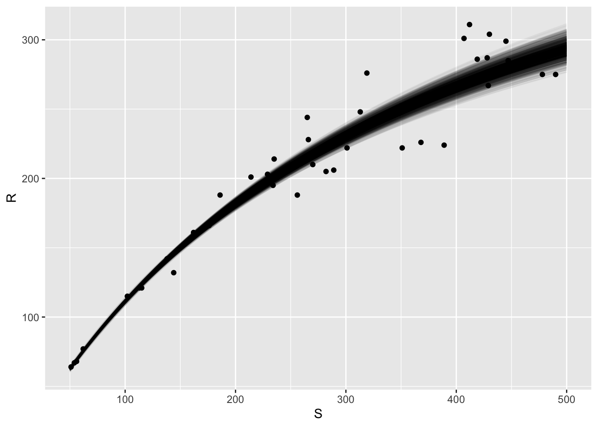

# load packages
pacman::p_load(dplyr,
ggplot2,
nycflights13,
readr,
purrr)
# find mean of every column of mtcars
map_dbl(mtcars, mean) mpg cyl disp hp drat wt qsec
20.090625 6.187500 230.721875 146.687500 3.596563 3.217250 17.848750
vs am gear carb
0.437500 0.406250 3.687500 2.812500 # find type of each column in nycflights
map_chr(flights, typeof) year month day dep_time sched_dep_time
"integer" "integer" "integer" "integer" "integer"
dep_delay arr_time sched_arr_time arr_delay carrier
"double" "integer" "integer" "double" "character"
flight tailnum origin dest air_time
"integer" "character" "character" "character" "double"
distance hour minute time_hour
"double" "double" "double" "double" # find number of unique values in each column
map_int(iris, function(x) length(unique(x)))Sepal.Length Sepal.Width Petal.Length Petal.Width Species
35 23 43 22 3 # generate four samples of size ten with specified means
map(c(-10, 0, 10, 100), rnorm, n = 10)[[1]]
[1] -8.482869 -11.588905 -10.527597 -9.160736 -10.258725 -9.755317
[7] -10.725900 -12.331893 -9.610715 -10.742107
[[2]]
[1] 0.6934757 -0.5325608 0.4105502 0.5090103 -0.2771815 -0.2426831
[7] -0.2054497 1.1787998 1.1532223 0.5716889
[[3]]
[1] 9.614165 12.545525 11.414957 10.072266 9.430050 10.497848 9.850334
[8] 7.950163 11.445005 9.112158
[[4]]
[1] 98.49483 100.35498 101.52416 100.94578 98.85780 99.70877 99.42872
[8] 99.39081 101.40607 100.92163# read data
fish <- read_table('../../data/fish.txt')
# function for population size
N_hat <- function(df){
fitted_model <- lm(I(1/R) ~ I(1/S), data = df)
beta <- unname(coef(fitted_model))
(1 - beta[2]) / beta[1]
}
# number of bootstrap replicates
n_bootstrap_replicates <- 1e3
# create bootstrap samples
fish_boot <- map(1:n_bootstrap_replicates,
function(x) slice_sample(fish,
n = nrow(fish),
replace = TRUE)
)
# evaluate n_hat on samples
N_hat_boot <- map_dbl(fish_boot, N_hat)
# find standard error of result
(N_hat_se <- sd(N_hat_boot))[1] 3.868415# store linear models fit to each bootstrap
linear_models <- map(fish_boot, function(x) lm(I(1/R) ~ I(1/S), data = x))
# store coefficients of linear models
coef_boot <- map(linear_models, coef)
# function to estimate R from S
bh_curve <- function(beta, S) {
tibble(
S = S,
R = 1 / (beta[1] + (beta[2] / S))
)
}
# create curve using betas from coef_boot
bh_boot <- map(coef_boot, bh_curve, S = seq(50,500,by=1))
# bind rows and store list # in id column
bh_boot_df <- bind_rows(bh_boot, .id = "bootstrap_replicate")
# plot the curves
ggplot(fish, mapping = aes(x = S, y = R)) +
geom_point() +
geom_line(
data = bh_boot_df,
mapping = aes(group = bootstrap_replicate),
alpha = 1 / 20
)